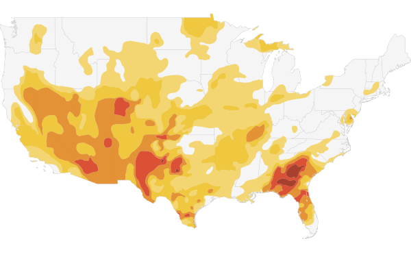

US Drought Area by Severity
Hover over legend colors for category definitions.
Surface Area of U.S. in Drought by Severity
- Abnormally Dry
- Moderate Drought
- Severe Drought
- Extreme Drought
- Exceptional Drought
Hover over legend colors for category definitions.